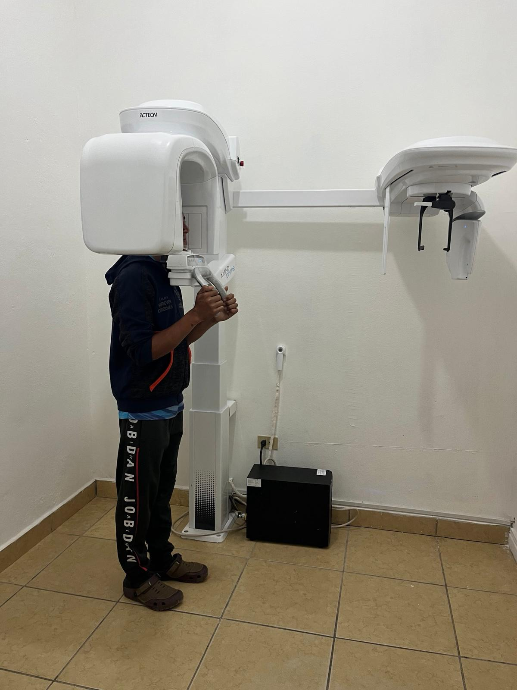
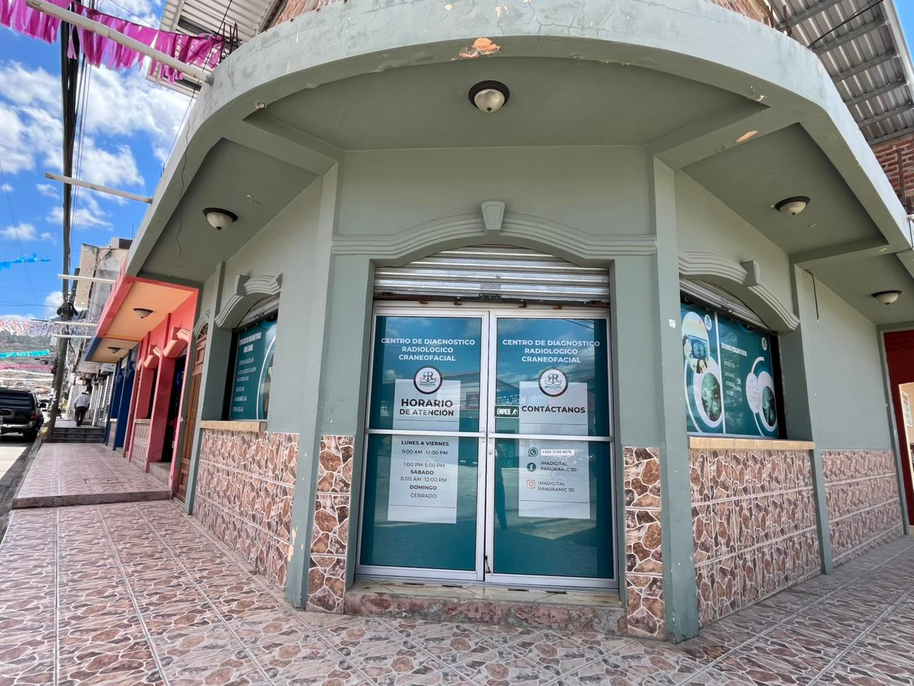
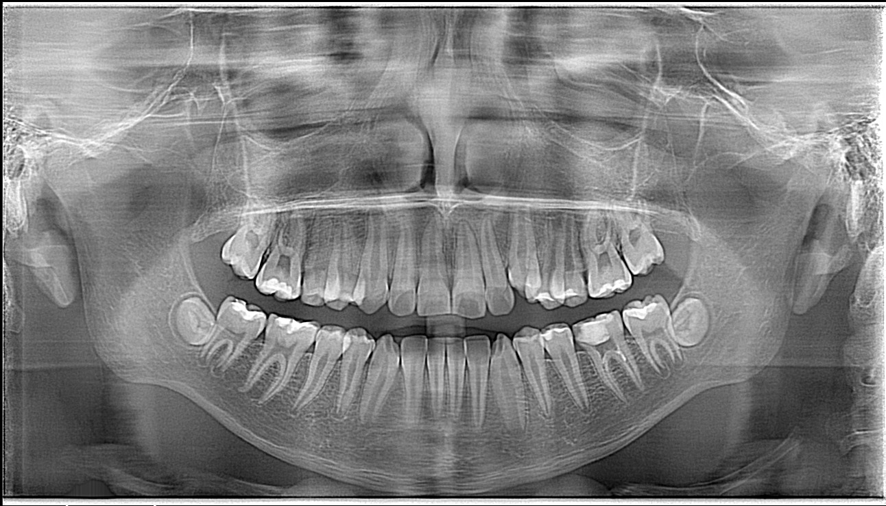
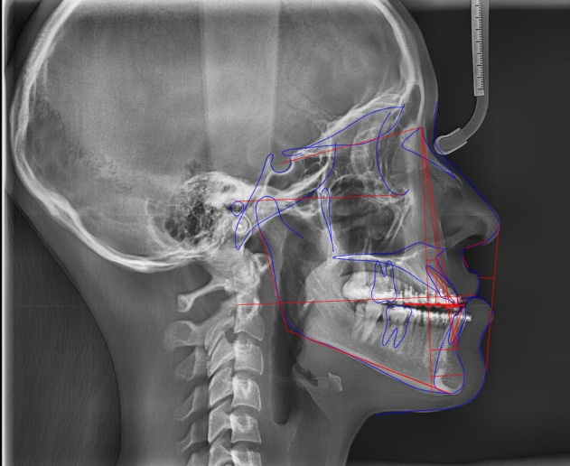

Centro de diagnóstico radiológico craneofacial


Brindamos estudios radiológicos con tecnología moderna, garantizando imágenes precisas y confiables para un mejor diagnóstico.
Contamos con equipos modernos de radiología y tomografía que garantizan estudios de alta calidad y resultados más detallados.
Protegemos la información de cada paciente y realizamos los estudios bajo estándares de seguridad y responsabilidad profesional.

En Imadigital Panoramic 3D contamos con equipos de radiología digital de última generación que permiten obtener imágenes de alta precisión para un diagnóstico confiable. Realizamos estudios en 2D y 3D, incluyendo radiografías digitales y tomografía Cone Beam, que permiten obtener imágenes bidimensionales y tridimensionales detalladas de las estructuras craneofaciales, facilitando la planificación de tratamientos odontológicos y maxilofaciales.



Las radiografías 2D permiten obtener imágenes claras de la estructura dental y ósea, facilitando la detección de problemas dentales y el diagnóstico en diferentes tratamientos odontológicos.

La tomografía 3D proporciona imágenes tridimensionales detalladas de los maxilares y estructuras craneofaciales, permitiendo diagnósticos más precisos y una mejor planificación de tratamientos.

Estudios especializados utilizados en ortodoncia para analizar la estructura facial y dental.